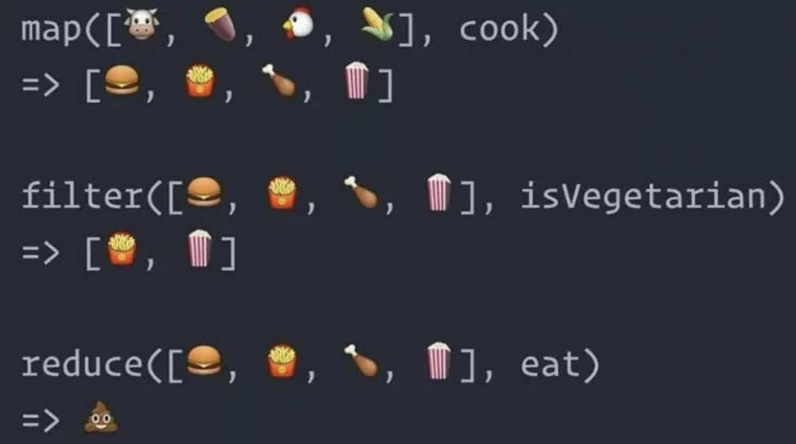

JS数组
Javascript里面并没有真正的数组，只是用对象模拟的数组。
创建一个数组
1 | 1. let arr = [1,2,3,4,5,6] |
上面两种方法都可以创建一个数组，第一种是简写模式，第二种是规范模式，要注意的是第二种创建的方式，如果Array()里面只有一个参数的时候，是定义这个数组length。
数组的转化
- 字符串转数组
1 | let str = "123456" |
split可以将字符串转换为数组，里面接受两个参数，第一个参数表示以什么做为分隔符分隔字符串，第二个参数指定返回数组的长度。
1 | let str = "123" |
Array.from可以将一个有length属性的对象，转换成一个数组。接受3个参数，第一个参数是要转换为数组的对象，第二个参数是数组中每个参数要调用的函数，映射函数中this的对象
1 | let arr = [1,2,3,4] |
join可以将数组里所有元素连接起来，变成一个字符串。接受一个参数，指定数组里面的每个元素用什么方式相连。
1 | let arr = [1,2,3] |
concat可以连接两个数组，不会改变原来的数组，会返回一个连接后的新数组。
1 | let arr = [1,2,3,4,5] |
slice可以截取数组，接受两个参数，第一个参数表示从哪里开始截取，第二个参数表示截取到哪里结束。第二个参数如果省略，就会从开始的位置一直到数组最后。如果是0的话，就可以截取整个数组，这样就相当于复制的这个数组。
数组的增删改查
删除数组里的元素
修改length这样也可以删除元素。但是不建议这样删除数组里面的元素
1 | let arr = [1,2,3,4,5,6,7] |
shift()可以删除数组里的第一个元素，并且返回该元素
1 | let arr = [1,2,3,4,5,6,7] |
pop()可以删除数组里的最后一个元素，并且返回该元素
1 | let arr = [1,2,3,4,5,6,7] |
splice()方法接受三个参数，第一个是数组元素的位置，第二是要删除几个，第三个就是要在删除的位置上增加的元素
查看数组里的元素
因为数组也是一种对象，所以可以用Object.keys和Object.values来查看数组里面元素的属性名和属性值。因为数组里面所谓的属性名都是用数字作为属性名，如果通过Object.keys来查看的话，会连不是数字的属性名也一并查出来,所以查看数组，我们一般是用for循环来遍历一个数组
1 | let arr = [1,2,3,4,5,6] |
以上代码就是用for循环遍历一个数组
还可以用forEach()来遍历一个数组
1 | let arr = [1,2,3,4,5,6,7] |
forEach()方法接受一个函数，函数里面接受3个参数，第一个参数是数组的索引，第二参数是数组的元素，第三个参数是数组本身。
为了更好的理解forEach，我们可以手写一个forEach函数
1 | function Foreach(fn){ |
以上代码就是forEach的原理，接受一个函数，然后for循环，每次for循环就调用一次传入的函数，并且把i,this[i],this,传回给函数。
查看数组里面的单个元素
1 | let arr = [1,2,3,4,5,6,7] |
查看数组里面是否有否个元素
1 | let arr = [1,2,3,4,5] |
如果存在元素，就返回该元素对应的索引，如果不存就返回-1
使用条件查找元素
1 | let arr = [1,2,3,4,5,6,7,8] |
找到第一个偶数
增加数组里的元素push()从尾部加入N个元素，返回数组的新长度。
unshift()从头部加入N个，返回数组新长度。
splice()
1 | let arr = [1,2,3,4,5,6,7] |
以上代码表示，从索引为1的位置，删除0个元素，然后插入1,2,3,4
reverse() 可以改变数组的排列顺序
sort() 让数组进行排序
1 | let arr = [20,32,3,41,53] |
理解不了，默认情况是按从小到大的排序。如果要按从大到小排序，需要进行下面操作
1 | let arr = [20,32,3,41,53] |
原理现在的知识，实在是搞不懂，只能死记硬背。。
数组变化
有三个方法
map()加工一下原有数组，然后返回。 n变nfilter()在数组里面找到符合条件的元素 n变少reduce()n变1
三个方法可以通过下图理解
map()和fliter()都很好理解
最难理解的是reduce()reduce()里面接受两个参数，第一个参数为一个函数，第二个参数是原始值
- 第一个值(fn),里面有可以接受4个值
- 累记器
- 数组中正在处理的元素
- 数组中正在处理元素的索引
- 数组本身
- 原始值
下面是两个例子
1 | let arr = [1,2,3,4,5,6] |
数组arr里面所有元素相加。
1 | let arr = [1,2,3,4,5,6,7] |
上面的代码是，把arr数组里面，所有大于3的元素的索引，记录在一个数组里面
<完>
参考资料
饥人谷